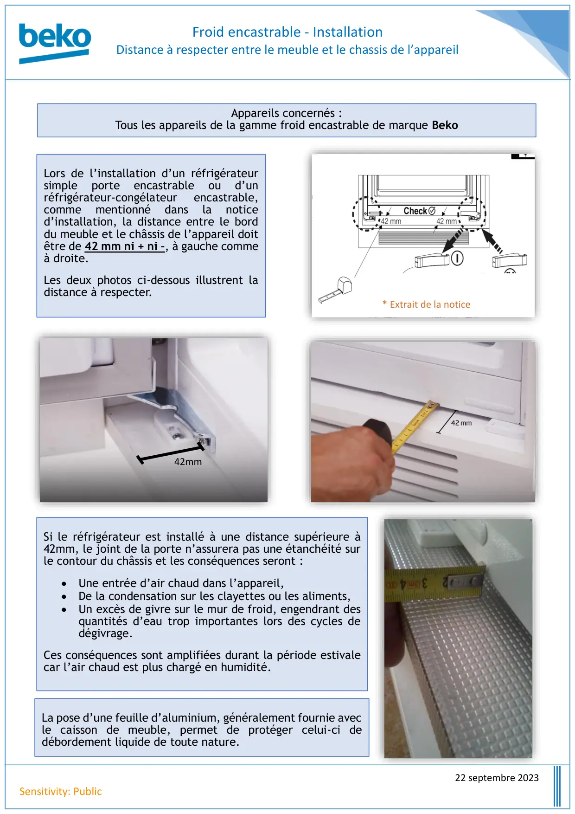

Note Information Froid Encastrable Installation

Froid encastrable - InstallationDistance à respecter entre le meuble et le chassis de l’appareil22 septembre 2023Sensitivity: PublicLors de l’installation d’un réfrigérateursimpleporteencastrableoud’unréfrigérateur-congélateurencastrable,commementionnédanslanoticed’installation, la distance entre le borddu meuble et le châssis de l’appareil doitêtre de 42 mm ni + ni –, à gauche commeà droite.Les deux photos ci-dessous illustrent ladistance à respecter.42mm* Extrait de la noticeSi le réfrigérateur est installé à une distance supérieure à42mm, le joint de la porte n’assurera pas une étanchéité surle contour du châssis et les conséquences seront :• Une entrée d’air chaud dans l’appareil,• De la condensation sur les clayettes ou les aliments,• Un excès de givre sur le mur de froid, engendrant desquantités d’eau trop importantes lors des cycles dedégivrage.Ces conséquences sont amplifiées durant la période estivalecar l’air chaud est plus chargé en humidité.Appareils concernés :Tous les appareils de la gamme froid encastrable de marque BekoLa pose d’une feuille d’aluminium, généralement fournie avecle caisson de meuble, permet de protéger celui-ci dedébordement liquide de toute nature.
1 / 1